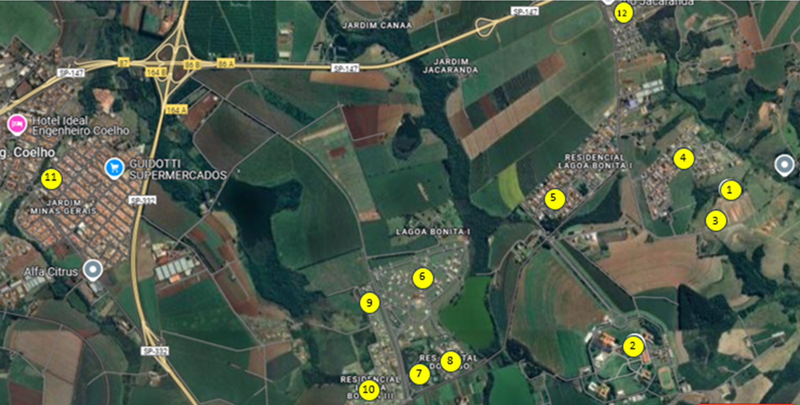

üí∞ Investimento Estrat√©gico
R$ 32,00/m² – Total: R$ 890.685,00
üìä Tabela Comparativa de pre√ßos por m2 na regi√£o

Ideal para moradia ou investimento, com alto potencial de valorização. Opção única devido à divisão de herança.
27.833 m² com preço especial
A 800 metros do UNASP-EC, com acesso asfaltado. Ao lado da Cidade Universitária.
R$ 32,00/m² – Total: R$ 890.685,00
Ideal para moradia ou investimento, com alto potencial de valorização. Opção única devido à divisão de herança.

Apenas 800 metros da universidade. Perfeito para projetos residenciais e estudantis.